건설기계설비산업기사 (2008-03-02 기출문제)
1과목: 기계제작법
1. 유동형 칩을 얻고자 할 경우 다음 중 잘못된 조건은?
- 연성재료를 두께가 얇고 작은 칩으로 고속 절삭한다.
- 경사각을 크게 하고 최적 온도로 유지한다.
- 윤활성이 좋은 절삭유를 사용한다.
- 연성재료를 두껍고 큰 칩으로 저속 절삭한다.
(정답률: 알수없음)

2. 다음 열처리 조직 중 경도가 가장 큰 것은?
- 마텐자이트
- 페라이트
- 오스테나이트
- 펄라이트
(정답률: 알수없음)
3. 교류 아크용접기의 형식이 아닌 것은?
- 가포화 리액터형
- 가동코일형
- 발전기형
- 가동철심형
(정답률: 알수없음)
4. 다음 중 방전가공에 대한 설명으로 가장 옳은 것은?
- 기계적 진동을 하는 공구와 공작물 사이에 연삭입자와 물 또는 기름의 혼합액을 주입하여 급격한 타격작용으로 공작물 표면을 가공하는 방법
- 공작물을 양극으로 하여 연마액 안에서 공작물의 표면을 연마하는 가공법
- 공작물의 모양에 맞게 만든 전극과 공작물 사이에서 방전을 시켜 구멍뚫기, 조각, 절단 등의 가공을 하는 방법
- 전해 연삭에서 나타난 양극 생성물을 연삭작업으로 갈아내는 가공법
(정답률: 알수없음)
5. 드릴에서 시닝(thinning)을 옳게 설명한 것은?
- 드릴의 장시간 사용으로 웹(web)이 얇아지는 것이다.
- 드릴의 수명을 연장키 위해 드릴을 두껍게 가공하는 것이다.
- 백 테이퍼를 증가시키는 것이다.
- 절삭저항을 감소시키기 위하여 웹(web) 두께를 얇게 연삭하는 것이다.
(정답률: 알수없음)
6. 다음 측정기 중 아베(Abbe)의 원리에 가장 잘 맞는 구조를 갖고 있는 것은?
- 화이트 게이지
- 외측 마이크로미터
- 캘리퍼형 내측 마이크로미터
- 버니어 캘리퍼스
(정답률: 알수없음)
7. 주물사의 구비 조건으로 틀린 것은?
- 열전도성이 좋아야 한다.
- 성형성이 좋아야 한다.
- 내화성이 커야한다.
- 통기성이 좋아야 한다.
(정답률: 알수없음)
8. 시안화칼륨(KCN)을 이용한 표면경화법은?
- 침탄법
- 질화법
- 청화법
- 화염법
(정답률: 알수없음)
9. 에이프런(apro)과 새들(saddle)은 선반의 어느 부분에 구성되어 있는가?
- 주축대
- 심압대
- 왕복대
- 베트
(정답률: 알수없음)
10. 숏 피닝(shot peening)의 설명으로 틀린 것은?
- 금속의 표면경도를 증가시킨다.
- 피로강도를 높여준다.
- 주로 강구로 표면을 때린다.
- 연마액을 사용하여 표면을 연마한다.
(정답률: 알수없음)
11. 가공경화(work hardening) 현상에 대한 설명으로 가장 적합한 것은?
- 소성변형에 대하여 경도가 감소하는 현상이다.
- 소성변형에 대하여 저항이 증가하는 현상이다.
- 입자들 사이에 크랙이 생기는 현상이다.
- 결정격자가 변화하는 현상이다.
(정답률: 알수없음)
12. 초음파 용접에 관한 설명 중 틀린 것은?
- 접촉면 사이의 원자 간의 인력(引力)이 작용하여 용접이 된다.
- 용접가능 한 판 두께가 매우 얇다.
- 기압력이 필요 없다.
- 서로 다른 금속 간의 용접이 가능하다.
(정답률: 알수없음)
13. 정밀입자 가공에 해당하는 것은?
- 릴리빙
- 브로칭
- 보링
- 액체 호닝
(정답률: 알수없음)
14. 일반적인 리벳(rivet) 작업용 공구가 아닌 것은?
- 리머(reamer)
- 스냅(snap)
- 해머(hammer)
- 드리프트(drift)
(정답률: 알수없음)
15. 두께 3mm의 연강판에서 지름 50mm의 원판을 펀칭하는데 필요한 힘은 약 몇 kgf 인가? (단, 연강판의 전단저항은 32 kgf/mm2 이다.)
- 6475
- 8972
- 12846
- 15080
(정답률: 알수없음)
16. 단면형상에 따른 줄(file)의 일반적인 분류에 해당하지 않는 것은?
- 원형 줄
- I형 줄
- 반원형 줄
- 평형 줄
(정답률: 알수없음)
17. 절삭저항력(주분력) 150kgf, 절삭속도 50 m/min 일 때 절삭동력은 약 몇 PS 인가?
- 7.67
- 5.67
- 3.67
- 1.67
(정답률: 알수없음)
18. 소성가공에서 냉간가공과 열간가공을 구분하는 기준은?
- 변태온도
- 단조온도
- 담금질온도
- 재결정온도
(정답률: 알수없음)
19. 삼침법이란 주로 나사의 어느 부분을 측정하는 방법인가?
- 바깥지름
- 나사산의 각도
- 유효지름
- 피치
(정답률: 알수없음)
20. 검출기를 기계의 테이블에 직접 부착하여 피드백을 행하게 하여 정밀도를 높일 수 있는 NC 서보의 종류는?
- 개방회로 방식(open loop system)
- 반폐쇄회로 방식(semi-closed loop system)
- 폐쇄회로 방식(closed loop system)
- 반개방회로 방식(semi-open loop system)
(정답률: 알수없음)
2과목: 재료역학
21. 단면적이 8cm2인 봉을 30℃에서 연직으로 매달고 다음에 0℃로 냉각하였을 때 원래의 길이를 유지하려면 봉의 하단에 몇 kN의 추를 매달면 되는가? (단, 탄성계수 E = 200GPa, 선팽창계수 α = 11×10-6/℃, 자중에 의한 신장량 무시)
- 528
- 0.528
- 5.28
- 52.8
(정답률: 알수없음)
22. 그림과 같은 직사각형 단면의 외팔보에 생기는 최대전단응력은 약 몇 MPa 인가?
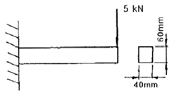
- 2.6
- 2.8
- 3.1
- 3.4
(정답률: 알수없음)
23. 다음 그림과 같은 L형 도형에서 단면적에 대한 도심
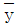
는 몇 cm 인가?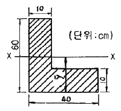
- 12
- 16.11
- 21.67
- 50.15
(정답률: 알수없음)
24. 지름 5cm, 길이 1m인 기둥의 세장비는?
- 40
- 60
- 80
- 100
(정답률: 알수없음)
25. 다음 그림과 같은 단순보의 단면 m-n에 발생하는 것은?
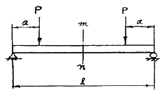
- 굽힘모멘트만 작용한다.
- 전단력만 작용한다.
- 굽힘모멘트와 전단력이 작용한다.
- 굽힘모멘트 및 전단력이 작용하지 않는다.
(정답률: 알수없음)
26. 인장응력이 발생하고 있는 부재의 탄성계수 E를 구하는 식은? (단, A는 단면적, δ는 신장량, P는 하중, L은 부재의 처음 길이이다.)
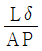
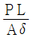
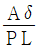
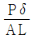
(정답률: 알수없음)
27. 그림과 같은 단순보에서 A 지점의 반력은?
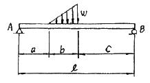
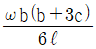
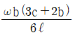
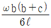
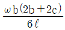
(정답률: 알수없음)
28. 수직으로 매단 지름 10mm 강봉의 하단에 10kN의 물체를 매달았을 때 1cm의 신장량이 측정되었다. 강봉의 원래 길이는 몇 cm 인가? (단, 강봉의 탄성계수 E = 210GPa 이고, 봉의 자중은 무시한다.)
- 330
- 3300
- 165
- 1650
(정답률: 알수없음)
29. 그림과 같이 단이 있는 환봉에 인장하중 P를 작용시킬 경우 d1 : d2 = 1 : 2라 하면 d1에 생기는 응력 σ1과 d2에 생기는 응력 σ2와의 비(σ1 : σ2)는 얼마인가?
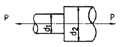
- 1 : 2
- 1 : 4
- 2 : 1
- 4 : 1
(정답률: 알수없음)
30. 150kPa의 내압을 받고 있는 지름 100cm, 두께 1.5cm의 얇은 원통이 있다. 원통에 발생되는 최대 전단응력은 몇 MPa 인가?
- 2.5
- 11.5
- 5
- 1.25
(정답률: 알수없음)
31. 그림과 같은 단순 지지보에서 지지점 A에 생긴 처짐각은? (단, E는 탄성계수, I는 단면 2차모멘트이다.)
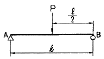
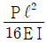
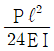
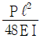
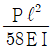
(정답률: 알수없음)
32. 단면 30cm×50cm, 길이 10m의 단순보의 중앙에 1kN의 집중하중이 작용할 때, 최대 굽힘응력은 최대 전단응력의 몇 배인가?
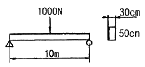
- 10배
- 15배
- 20배
- 40배
(정답률: 알수없음)
33. 그림과 같은 단면의 X-X 축에 대한 단면 2차 모멘트는?
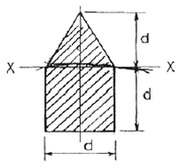
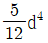
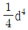
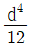
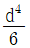
(정답률: 알수없음)
34. 지름 2cm, 길이 1m인 외팔보의 자유단에 집중 하중 P가 작용할 때 최대 처짐량은 2cm가 되었다. 최대 굽힘응력은 몇 MPa 인가? (단, 탄성계수 E = 200GPa 이다.)
- 120
- 160
- 200
- 240
(정답률: 알수없음)
35. 다음과 같은 외팔보의 자유단에 집중 하중 P가 작용하고 있다. 보의 자유단의 처짐량은 얼마인가? (단, E는 탄성계수, I는 단면 2차모멘트이다.)
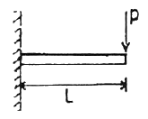
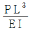
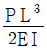
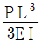
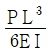
(정답률: 알수없음)
36. 다음은 오일러의 식을 적용시킬 수 있는 기둥에서 좌굴 응력(buckling stress)에 대한 설명이다. 옳은 것은?
- 길이에 제곱에 비례한다.
- 세장비의 제곱에 반비례한다.
- 탄성 계수의 제곱에 비례한다.
- 단면 2차 모멘트에 반비례한다.
(정답률: 알수없음)
37. 다음과 같은 외팔보의 전단력 선도로 올바른 것은?
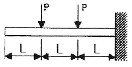
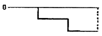
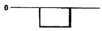
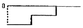
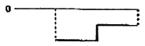
(정답률: 알수없음)
38. 지름 10mm, 길이 1m인 비틀림 모멘트를 전달하는 축에서 0.25도까지 비틀림 각이 제한된다면 허용되는 비틀림 모멘트는 몇 N·m 인가? (단, 전단 탄성계수 G = 77 GPa 이다.)
- 0.32
- 0.66
- 1.0
- 2.0
(정답률: 알수없음)
39. 같은 재료와 길이를 사용하여 처음 지름의 2배로 했을 때 비틀림 각이 같다면 비틀림 모멘트의 비는?
- 1 : 2
- 1 : 4
- 1 : 8
- 1 : 16
(정답률: 알수없음)
40. 응력-변형률 선도에 대한 설명 중에서 틀린 것은?
- 비례한도 : 응력과 변형률이 비례적으로 변하는 상한의 응력
- 탄성한도 : 응력을 제거할 때 영구변형이 남지 않는 상태로 되돌아오는 상한의 응력
- 항복강도 : 재료가 저항할 수 있는 최대 응력
- 파단강도 : 파단하기 직전의 응력
(정답률: 알수없음)
3과목: 기계설계 및 기계재료
41. 철공용 줄(file)의 재질로 가장 적합한 것은?
- 고속도강
- 탄소공구강
- 세라믹
- 연강
(정답률: 알수없음)
42. 다음 절삭 공구용 특수강은?
- Ni-Cr 강
- 불변강
- 내열강
- 고속도강
(정답률: 알수없음)
43. 탄소강에서 적열취성의 원인이 되는 원소는?
- 규소
- 망간
- 인
- 황
(정답률: 알수없음)
44. 열간가공과 비교하여 냉간가공의 장점은 무엇인가?
- 작업능률이 양호하다.
- 가공에 필요한 동력이 적게 소모된다.
- 제품 표면이 아름답다.
- 단시간 내 완성이 가능하다.
(정답률: 알수없음)
45. 탄소가 0.25%인 탄소강의 기계적 성질은 0~500℃ 사이에서 조사하면 200~300℃에서 인장강도가 최대치를, 연신율이 최저치를 나타내며 가장 취약하게 되는 현상은?
- 고온취성
- 상온 충격치
- 청열취성
- 탄소강 충격값
(정답률: 알수없음)
46. 다음 중 주철의 흑연발생 촉진 원소는 어느 것인가?
- Si
- Mn
- P
- S
(정답률: 알수없음)
47. 순철(α철)의 격자구조는?
- 면심입방격자
- 면심정방격자
- 체심입방격자
- 조밀육방격자
(정답률: 알수없음)
48. 가공용 알루미늄합금 중 항공기나 자동차 몸체용 고강도 Al-Cu-Mg-Mn계의 합금은?
- 두랄루민
- 하이드로날륨
- 라우탈
- 실루민
(정답률: 알수없음)
49. 비중이 1.74 정도이며, 가벼워 항공기 및 자동차 부품 등에 사용되는 합금의 재료는?
- Sn
- Cu
- Mg
- Ni
(정답률: 알수없음)
50. 다음 회주철에 대한 설명 중 틀린 것은?
- 인장력에 약하고 깨지기 쉽다.
- 탄소강에 비해 진동에너지의 흡수가 되지 않는다.
- 주조와 절삭가공이 쉽다.
- 유동성이 좋아 복잡한 형태의 주물을 만들 수 있다.
(정답률: 알수없음)
51. 다음 중 표준스퍼 기어에서 이의 크기가 가장 큰 것은? (단, m : 모듈, P : 지름피치이다.)
- P = 10
- P = 12
- m = 2
- m = 2.5
(정답률: 알수없음)
52. 다음 그림과 같은 원통코일 스프링의 처짐량 δ = 60mm 일 때, 작용하는 하중 W는 몇 kgf 인가? (단, 스프링 상수 k1 = 6kgf/cm, k2 = 2kgf/cm 이다.)
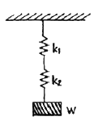
- 4 kgf
- 6 kgf
- 9 kgf
- 48 kgf
(정답률: 알수없음)
53. 축의 홈이 깊게 파여 축의 강도가 약하게 되기는 하나 키와 키홈 등이 모두 가공하기 쉽고 키가 자동적으로 축과 보스 사이에 자리를 잡을 수 있어 자동차, 공작기계 등의 축에 널리 사용되며 특히 테이퍼 축에 사용하면 편리한 키는?
- 둥근 키
- 접선 키
- 묻힘 키
- 반달 키
(정답률: 알수없음)
54. V 벨트를 평벨트와 비교한 특징이다. 틀린 것은?
- 전동효율이 좋다.
- 축간거리를 더 멀리 할 수 있다.
- 고속운전이 가능하다.
- 정숙한 운전이 가능하다.
(정답률: 알수없음)
55. 사각형 단면(100mm×60mm)의 기둥에 10kgf/cm2 압축응력이 발생할 때 압축하중은 약 얼마인가?
- 6000 kgf
- 600 kgf
- 60 kgf
- 60000 kgf
(정답률: 알수없음)
56. 축을 설계할 때 고려해야 할 사항이 아닌 것은?
- 강도 및 변형
- 진동
- 회전방향
- 열응력
(정답률: 알수없음)
57. 역류를 방지하여 유체를 한쪽 방향으로만 흘러가게 하는 밸브를 무슨 밸브라 하는가?
- 콕밸브
- 체크밸브
- 게이트밸브
- 안전밸브
(정답률: 알수없음)
58. 재료에 높은 온도로 큰 하중을 일정하게 작용시키면 응력이 일정하대 시간에 경과에 따라 변형률이 증가하는 현상은?
- 크리프현상
- 시효현상
- 응력집중현상
- 피로파손현상
(정답률: 알수없음)
59. 반복하중을 받는 스프링에서는 그 반복속도가 스프링의 고유진동수에 가까워 지면 심한 진동을 일으켜 스프링의 파손 원인이 된다. 이 현상을 무엇이라 하는가?
- 자유높이
- 스프링상수
- 비틀림모멘트
- 서징
(정답률: 알수없음)
60. 3줄 나사에서 나사를 3회전 하엿더니 36mm 전진하였다. 이 나사의 피치는?
- 12mm
- 6mm
- 4mm
- 3mm
(정답률: 알수없음)
4과목: 유압기기 및 건설기계일반
61. 가스 오일식 축압기(accumulator)에 사용되는 가장 적당한 가스는?
- 질소가스
- 탄산가스
- 산소가스
- 아세틸렌가스
(정답률: 알수없음)
62. 그림에서 실린더 B의 반지름은 실린더 A의 반지름의 2배이다. 힘 F1과 F2 사이의 관계는?
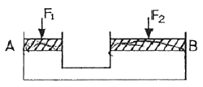
- F2 = 4F1
- F2 = 2F1
- F1 = F2
- F1 = 4F2
(정답률: 알수없음)
63. KS 유압·공기압 도면기호를 구성하는 기호 요소 중에서 실선의 용도는?
- 전기신호선
- 파일럿 조작관로
- 필터
- 포위선
(정답률: 알수없음)
64. 유압구동 기계의 관성 때문에 이상 압력이 생기거나 이상 음이 발생되어 유압 장치가 파괴되는 것을 방지하기 위해 사용되는 회로는?
- 제동 회로
- 증압 회로
- 재생 회로
- 출력 회로
(정답률: 알수없음)
65. 유압 펌프의 송출 압력이 55 kgf/cm2 이고, 송출 유량이 30ℓ/min 인 경우 펌프의 동력은 약 몇 kW 인가?
- 2.10
- 2.70
- 2.90
- 3.70
(정답률: 알수없음)
66. 부하가 급격히 감소하더라도 피스톤이 급격히 하강하지 않도록 제어하는 회로로서 일정한 배압을 유지시켜 램이 중력에 의해 자유 낙하하는 것을 방지하는 보기와 같은 유압회로의 명칭은?
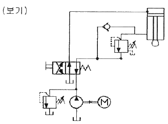
- 카운터 밸런스 회로(counter valance circuit)
- 재생 회로(regenerative circuit)
- 감속 회로(deceleration circuit)
- 브레이크 회로(brake circuit)
(정답률: 알수없음)
67. 다음 중 릴리프 밸브에서 압력 오버라이드의 설명으로 가장 적합한 것은?
- 전압력과 토출 압력의 차
- 크래킹 압력과 토출 압력의 차
- 전유량 압력과 크래킹 압력의 차
- 크래킹 압력과 서지 압력의 차
(정답률: 알수없음)
68. 다음 중 유압장치의 특징을 설명한 것으로 틀린 것은?
- 힘의 증폭이 용이하다.
- 무단변속이 불가능하다.
- 일정한 힘과 토크를 낼 수 있다.
- 제어가 비교적 간단하고 정확하다.
(정답률: 알수없음)
69. 온도의 변화에 따라 점도변화의 비율을 나타내기 위하여 사용되는 수치는?
- 내화지수
- 점도효율
- 점도지수
- 점도변화율
(정답률: 알수없음)
70. 유압 실린더에 작용하는 힘을 산출할 때 가장 관계있는 법칙은?
- 샤를의 법칙
- 파스칼의 법칙
- 가속도의 법칙
- 플레밍의 왼손법칙
(정답률: 알수없음)
71. 다음 중 일반화물의 단거리 운반기계로 가장 적합한 것은?
- 콘크리트 믹서
- 지게차
- 힌지 도저
- 백호
(정답률: 알수없음)
72. 아스팔트 믹싱 플랜트가 일반적으로 하는 일이 아닌 것은?
- 아스팔트 용해
- 골재건조
- 골재쇄석
- 아스팔트 혼합
(정답률: 알수없음)
73. 건설기계의 연소실 체적이 40cc이고, 행정체적이 280cc 일 경우 압축비로 옳은 것은?
- 8 : 1
- 7 : 1
- 6 : 1
- 5 : 1
(정답률: 알수없음)
74. 굴삭기로 굴삭 작업시 굴삭 동력의 전달 순서가 올바른 것은?
- 엔진 → 조정밸브 → 고압파이프 → 피니언기어 → 링기어 → 작동기
- 엔진 → 고압파이프 → 메인유압펌프 → 베벨기어 → 유압모터 → 트랙
- 엔진 → 고압파이프 → 클러치 → 변속기 → 작동기 → 유압실린더 → 트랙
- 엔진 → 메인유압펌프 → 조정밸브 → 고압파이프 → 유압실린더 → 작동기
(정답률: 알수없음)
75. 건설기계의 주된 용도가 바르게 연결되지 않은 것은?
- 디젤 해머 – 항타 작업
- 도저 – 송토 및 굴토 작업
- 기중기 – 운송 및 혼합 작업
- 그레이더 – 땅 고르기 작업
(정답률: 알수없음)
76. 굴삭기의 상부회전체에 대한 일반적인 설명으로 틀린 것은?
- 상부회전체는 360도 선회가 가능하다.
- 안전성을 유지하기 위해 평형추가 잇다.
- 선회모터에 의해 회전된다.
- 작업장치를 연결하는 아웃 리거가 있다.
(정답률: 알수없음)
77. 다음 중 설비 시설물의 동해, 동파 등을 방지하고 원활한 작동이 이루어지도록 배관, 밸브류, 수도계량기 등의 보온공사 전에 시행하는 것은?
- 중량 콘크리트 시공
- 발연선 설치공사
- 환기구 설치
- 압력용기 설치
(정답률: 알수없음)
78. 건설기술관리법에 따른 건설사업관리의 직접적인 세부 업무내용으로 가장 거리가 먼 것은?
- 계약관리
- 사업비관리
- 공정관리
- 지역관리
(정답률: 알수없음)
79. 설비의 자동제어 공사 시 자동제어방식은 아날로그 방식과 디지털 방식이 있다. 다음 중 디지털 방식은?
- 기계식
- 유압식
- DDC식
- 공기식
(정답률: 알수없음)
80. 디퍼 준설선의 특징으로 맞지 않는 것은?
- 굴삭력이 강하다.
- 경토질에 적합하다.
- 회전반경이 작다.
- 준설능력이 크다.
(정답률: 알수없음)